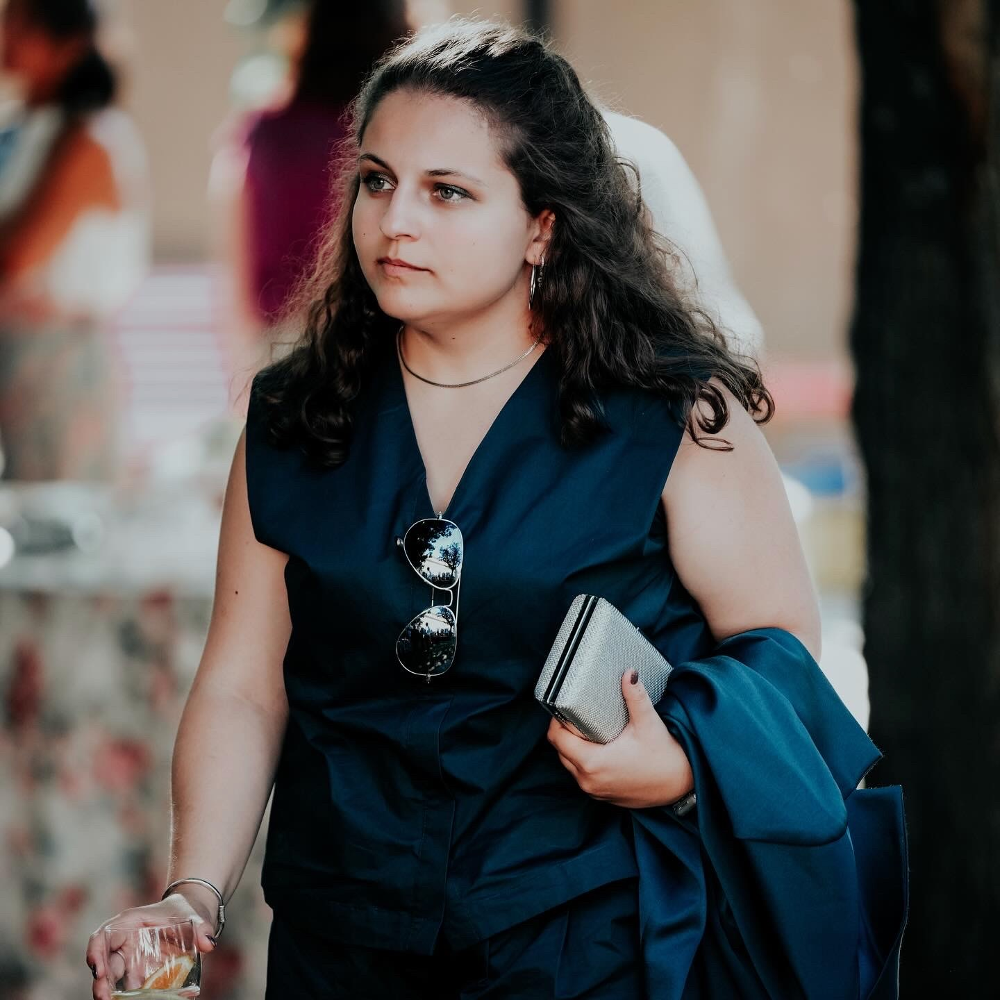

nuclear physics, astrophysics & everything in between
I am a graduate student in Physics at Técnico Lisboa, currently wrapping up both my BSc and my MS in Engineering Physics. Albeit unconventional, my academic journey blends hands-on laboratory work, computational analysis and simulation, and theoretical research.
My focus areas are Radiation and Nuclear Physics, with strong interests in Nuclear Astrophysics and medical applications. Throughout my master's, I have tailored my curriculum to include supporting fields such as Plasma Physics and Nanoelectronics, ensuring broad foundations for interdisciplinary research and innovation.
I am particularly interested in how nuclear processes drive cosmic phenomena, and how these mechanisms underpin transformative advances in medicine and energy production. Nuclear Physics, in particular, fascinates me both as a gateway to understanding the universe and as a source of clean energy for the future.